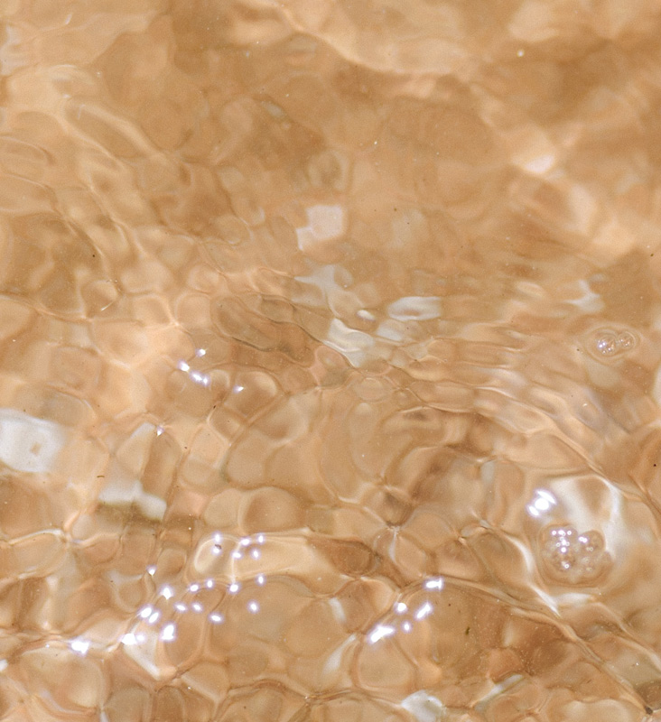
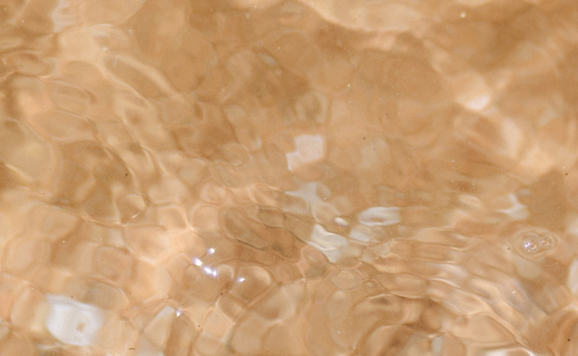
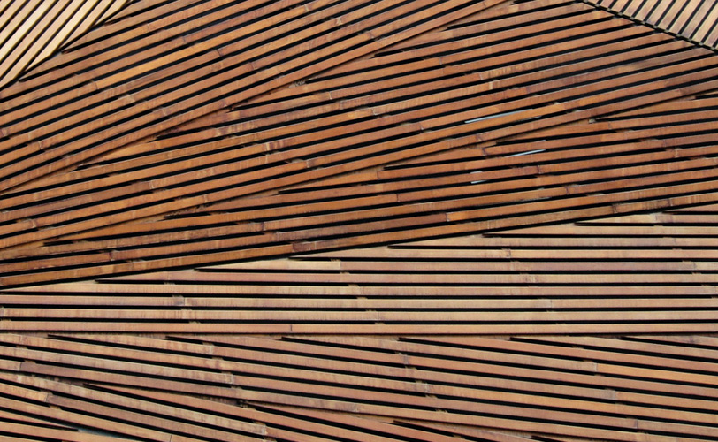

피부타입 정의
이상적인 피부 관리 방법은 맞춤형인데, 환경 조건과 라이프 스타일 그리고 가장 중요한 것은 바로 피부 타입을 고려하는 것이다.
물론 피부 타입을 엄격하게 고정하여 생각하는 건 결코 좋지 않다. 특히 피부 타입을 일반화하여 조언하는 것은 잘못된 생각이다. 그러나 피지 생성, 모공 크기, 텍스처 및 톤과 같은 특성을 검사하면 일정한 규칙성이 나타나게 된다.
건성, 지성, 복합성, 그리고 (더 적합한 단어를 찾기 어려우나) '보통' 피부로 나누어지나, 각 타입 사이에는 명확한 경계선으로 구분되어 있지 않다. 게다가 모든 피부 타입에서 나타날 수 있는 피부 반응성, 건조증, 모공 막힘과 같은 일시적인 피부 트러블과 혼동해서도 안 된다.
이번 기사에서는 피부 타입에 따른 관리 방법을 간략하게 소개하고 있지만, 피부 관리에 대해 더 깊게 파헤쳐보고 싶은 이들을 위해 추가 읽기도 첨부되어 있다.


보통 피부
우리가 소위 말하는 '보통’ 피부란, 중성이라고 부르는 그 불완전함에서 알 수 있듯이 지성도 건성도 아니며 적당한 양의 피지를 생산해낸다. 또한, 작은 모공, 고운 감촉, 전체적으로 일관적인 피부 톤, 부드럽고 매끄러운 표면이 특징이며 잡티가 거의 없다. 그러나 이러한 피부 특성의 변화가 어떤 식으로든 '비정상적'을 의미하는 것은 아니다. ‘보통’이라는 이름이 암시하는 것과 달리, 이와 같은 피부 타입은 보편적이 아닌 예외적이기 때문이다.
위의 설명과 자연스럽게 일치하는 피부를 가진 소수의 행운아는 피부의 균형을 유지하기 위해 지속적인 노력이 필요하다. 세안, 토너, 수분공급이 가능한 온화하면서도 효과적인 제형을 사용하며, 주 2회씩 각질 제거와 딥 클렌징, 그리고 필요할 경우 피부 영양 트리트먼트도 사용해 준다.
지성 피부
지성 피부는 일반적으로 빛나는 피부, 큰 모공, 그리고 노폐물로 인해 더 쉽게 막히는 모공인 것으로 구별된다. 이러한 특성은 피부 보호, 방수, 윤활제와 같은 역할을 하는 유성 왁스로 인한 풍부한 피지 생성에서 온다.
이러한 피지의 생산량 증식은 내부 및 외부의 다양한 요인에게서 온다. 사춘기, 임신, 갱년기, 스트레스 또는 월경 주기에서 오는 유전 변화부터 호르몬 변화까지 다양한 요인이 있다. 예를 들어 덥고 습한 날씨는 피지 생성을 악화시키는 경향이 있으며, 인공적인 가열 및 냉각은 피부를 건조하게 하여 결과적으로 수분 유지를 위해 피지 생성을 증가시킨다.
이솝 제품들은 피부 균형을 되찾아주는 다양한 성분들을 포함하고 있다. 신체 조직을 수축시키는 수렴성 성분들은 지성 피부의 큰 모공들을 조이는 데 도움을 준다. 예를 들어, 위치 헤이즐, 파슬리 씨 오일 및 녹차 추출물이 있다. 에틸 알코올(에탄올이라고도 함)은 피부 표면의 과도한 피지가 용해되어 제거가 용이하도록 피부를 쾌적하고 균형 있게 유지한다. 또한, 이솝의 제품들은 클렌징 및 정화 특성으로 유명한 비터오렌지, 티트리잎, 로즈마리잎 등 수많은 식물성 추출물을 사용하여 모공을 관리하고 피지 제거를 효과적으로 도와준다. 마지막으로, 피부 건조에 대한 반응으로 발생할 수 있는 유분 증가를 방지하기 위해 판테놀, 글리세린 및 소디움 카라기난과 같은 성분을 지닌 수분제를 통해 피부에 필요한 수분을 끌어당기고 결합하며 가두는 것이 좋다.
지성 피부는 균형을 유지하기 위하여 꾸준한 클렌징과 가볍지만, 효과적인 수분공급이 필요하다. 이러한 피부 타입에는 과잉 생성된 피지를 해결하되 피부 본연의 유분을 완전히 제거하지 않는 제품을 추천한다. 번들거리는 피부를 다룰 때 지나친 세안과 수분 공급을 적게 하는 것은 흔히 저지를 수 있는 일이지만, 이는 단지 수분을 흡수하는 피부가 더 많은 피지를 생성하도록 부추길 뿐이다.
지성 피부에 대한 자세한 설명과 가장 적합한 이브즈랩 제품을 찾으려면 아래 링크를 클릭하세요
건성 피부
피부 관리에 있어서, '건성'이라는 용어는 약간 오해를 살 수도, 그리고 모호하기도 하다. ‘건성 피부’는 단순하게 수분 부족으로 볼 수 없는데, 피지 생성이 충분하게 이뤄지지 않는 것으로 특정 지어야 한다. 즉, 여기에서 '건성'이란 '수분이 많은 상태'와 반하는 것이 아니라 '지성'의 반대말로 봐야 한다. 건조함은 피부 지방층의 온전함을 파괴하고, 이는 피부가 수분 부족과 민감성에 더 취약하게 만든다. 또한, 건조한 피부는 얇고 각질층이 벗겨지며 칙칙한 피부 톤을 나타낸다. 종종 거칠거나 피부가 '당기는' 느낌을 받기도 하며, 특히 세안 후에는 피부가 붉어지거나 불편한 느낌이 있기도 하다.

건조함은 기후로 인한 여러 가지 요인에 의해 발생할 수 있다. 예를 들어 추운 날씨나 낮은 습도 또는 거친 바람 등에 노출되는 피부는 특히 건조함에 취약해진다. 에어컨이 설치된 사무실에서 아파트의 난방에 이르기까지 실내 온도 조절 환경도 이와 유사한 건조함을 가져다준다. 이러한 외부 조건을 넘어서서, 유전적 요인들 또한 작용하는데 어떤 사람들은 단순히 유전적으로 피부가 건조해지는 경향이 있다. 노화 과정은 피부의 피지 생성 능력에도 영향을 미치기 때문에 건조함은 피부 노화와 관련되기도 한다. 마지막으로 호르몬 변동은 피부의 섬세한 균형을 무너뜨리고 때때로 피부 건조를 유발하기도 한다.
건조함을 해소하기 위해서는 보습 못지않게 적절한 클렌징과 토닝이 중요하다. 뜨거운 샤워보다 세면대에 미지근한 물을 받아 놓고 세안하는 것을 추천한다. 그리고 일반적으로, 수증기가 피부 문제를 악화시킬 수 있기 때문에 매우 뜨거운 샤워나 목욕탕에서 오랜 시간을 보내는 것은 피하는 것이 좋다. 피부가 생성하는 피지가 지나치게 제거되지 않게 클렌징은 특히 부드럽게 해야 한다. 굳이 각질 제거를 안 할 필요는 없으며 일주일에 한두 번 정도의 합리적인 수준으로 하되 매우 부드럽게 하는 것이 피부에 유익하다. 순한 토너를 사용해야 한다. 피부 본연의 유분을 녹이거나 지나치게 건조해지지 않도록 순한 토너로 피부의 초기 수분층을 제공하는 것이 최적한 선택이다. 마지막으로, 아침과 저녁으로 충분한 양의 유수분 보습제로 각질층(피부의 가장 바깥 층)의 표면에 풍부한 영양을 공급하고 전반적인 수분 레벨이 유지될 수 있도록 해야 한다. 보습 마스크나 추가적인 영양 공급을 위하여 페이스 오일을 정기적으로 이용하는 것도 데일리 제품의 이점을 더욱 잘 살려줄 수 있다.
건성 피부에 대한 자세한 설명과 가장 적합한 이솝 제품을 찾으려면 아래 링크를 클릭하세요.
복합성 피부
복합성 피부라는 이름에서 알 수 있듯이, 얼굴의 여러 부분에서 동시에 건성 피부와 지성 피부의 특징이 나타난다. 유분기는 일반적으로 T 존(이마, 코, 턱)이나 O 존(입가 주변)에 영향을 미치며, 볼과 눈 밑의 건조함이 가장 두드러진다. 이러한 피부의 불균형은 유전적 요인의 결과일 수 있다. 특히 호르몬과 환경 변화에 민감하고 뾰루지가 나기 쉬운 피부이기도 하다. 얼굴의 기름진 부위에 피지 분비가 증가하면 모공 막힘이나 피부 악화로 이어진다.
복합성 피부의 이러한 이중성은 위에서 언급한 지성 및 건성 피부 케어를 위한 성분이 모두 복합성 피부 케어에도 적용한다는 것을 의미한다. 하지만, 얼굴의 다른 부위에 별도의 제품을 바르기보다는 얼굴과 목 전체에 복합성 피부의 복잡한 요구를 해결하는 제품의 사용을 권장한다. 피부의 균형을 되찾고 피부 표면에 영양을 공급해주는 제품이어야 하며, 절대로 피부를 지나치게 자극하거나 부담스럽게 해서는 안 된다. 즉, 부드럽고 효과적으로 클렌징하여 과도하게 생성된 피지를 처리하고, 악화된 피부를 완화하며, 가벼운 수분 공급을 통해 섬세하게 피부의 균형을 찾아주어야 한다.
복합성 피부에 대해 더 자세히 알아보고 꼭 맞는 이솝 제품을 찾으려면 아래 링크를 클릭하세요.